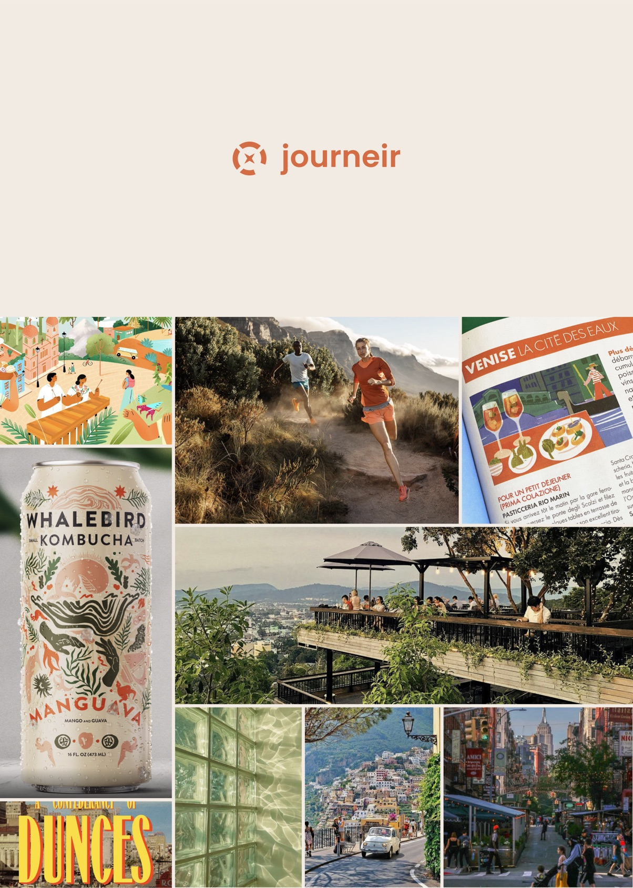
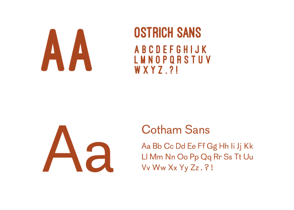
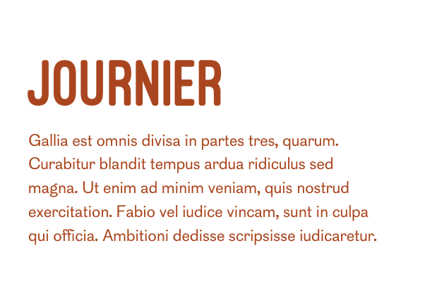

Cultivating a brand and web experience for travelers
CONTEXT / THE WHAT
A platform for the bold and restless.
Journeir was a conceptual project that supplemented primary client work during my internship. This project’s aim was to foster and challenge my creativity and design development.
The brand’s mission is to become a trusted companion and guide for travelers on their journey of discovery and exploration. They emphasize the spirit of wanderlust and the thrill of exploration.
CONTEXT / THE WHO
Adventure-seeking travelers craving authentic, offbeat experiences.
These travelers treat a trip as a fully immersive experience. Success means feeling they touched the real texture of a place.
BRANDING / MOODBOARD

Adjectives
Nomadic, adventurous, authentic, quirky
Emotions
Awe, excitement, gratitude, thrill, empowerment
BRANDING / COLORS & FONTS


DESIGN
A landing page that invites travelers to explore itineraries the way they explore life.
Taking the brand’s mission and the mood board’s design elements, I crafted an engaging landing page that allows users to discover niche travel itineraries and lean into their curiosity.

TAKEAWAYS
Small project. Big impact.
Journeir was a fun project that impacted me in unexpected ways. With no experience in branding, researching what it meant to craft a credible, trusting, and engaging brand taught me a lot about the impact of color, typography, and other visual elements. Creating this identity from scratch and having the creative liberties to take it any direction was not only incredibly fun, but also quite challenging.
Thinking about what it means to cultivate a feeling on top of designing for function was something I loved ruminating over. This project allowed me to think vibrantly and tap into a part of the design process that is much more emotionally-driven. Huge thank you to my mentors and managers at KG for their guidance and critique!